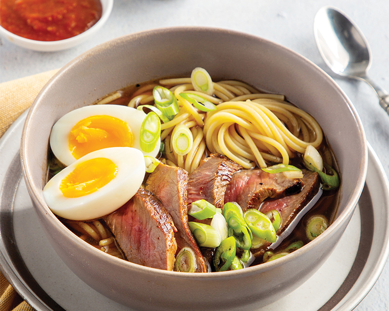

Yaka Mein

Description
If you like ramen, you'll love this Yaka Mein. The noodles, egg, steak, green onions, and broth mix for a wonderful flavor profile that you won't soon forget. It can be a little heavy, so no shame in using forks here!
Ingredients
Serves 4.
- ¼ cup low-sodium soy sauce
- 2 tablespoons firmly packed brown sugar
- 2 tablespoons Creole seasoning*, divided
- 1 tablespoon Worcestershire sauce
- 1 pound top sirloin steak
- 2 tablespoons vegetable oil
- 2 teaspoons minced garlic
- 1 (32-ounce) container low-sodium beef broth
- 14 cups water, divided
- 4 large eggs, room temperature
- 8 ounces spaghetti
- 1 tablespoon kosher salt
- ½ cup sliced green onion
- Garnish: soy sauce, hot sauce, garlic-chili sauce
*Recipe uses Tony Chachere’s Original Creole Seasoning.
Steps: Making the dish
- In a large resealable plastic bag, combine soy sauce, brown sugar, 1 tablespoon Creole seasoning, and Worcestershire. Add steak, and seal bag, turning to combine. Refrigerate for at least 1 hour or for up to 4 hours.
- Remove steak from bag, reserving marinade. Pat steak dry with paper towels. In a medium Dutch oven or stock pot, heat oil over medium-high heat until very hot. Add steak, and cook until browned, 2 to 3 minutes per side. Transfer steak to a plate, reserving drippings in pot.
- Reduce heat to medium; add garlic. Cook, stirring constantly, until fragrant, 1 minute. Add reserved marinade, scraping browned bits from bottom of pot with wooden spoon. Add beef broth, 2 cups water, and remaining 1 tablespoon Creole seasoning. Bring to a boil; reduce heat to medium-low, and simmer for 10 minutes.
- Meanwhile, in a large stockpot, bring remaining 12 cups water to a boil over medium-high heat. Fill a large bowl with ice water. Gently lower eggs into boiling water. Cook to desired degree of doneness, about 6 minutes for medium-cooked. Using a slotted spoon, gently transfer eggs to ice water bath. Add spaghetti and salt to boiling water; cook according to package directions for al dente. Drain.
- To serve, thinly slice steak against grain. Gently peel eggs, and cut in half lengthwise. Divide spaghetti among 4 serving bowls, and pour beef broth over pasta. Top with sliced beef, halved eggs, and green onion. Garnish with soy sauce, hot sauce, and garlic-chili sauce, if desired.